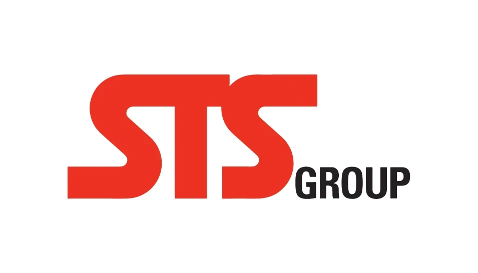
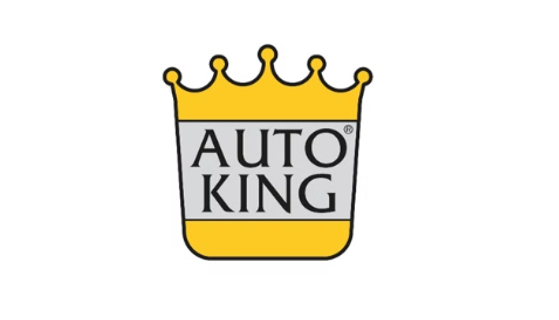
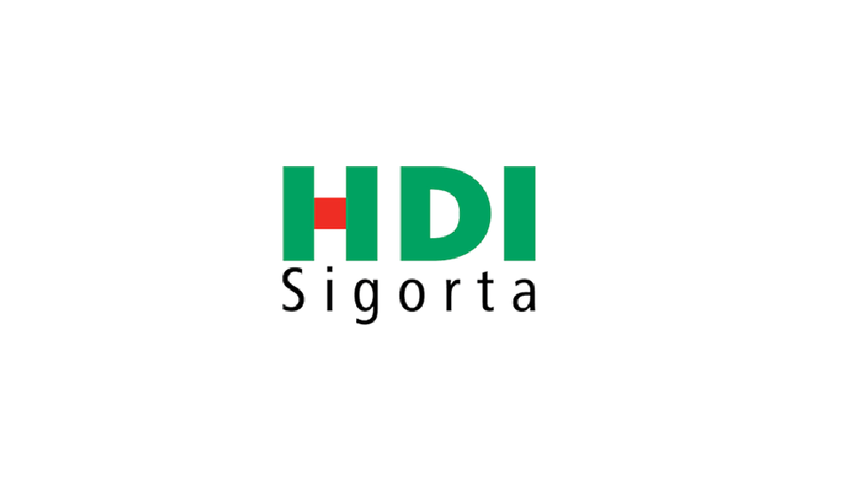

Seçili Referanslar: Kurumsal Eğitim & Danışmanlıklar

STS Group
2025 - Keynote: “Takımdaşlık ve Davranışın Kimyası”

Auto King
2025 - Stratejik Bakış Açısıyla İnsan Kaynakları Performans Yönetimi Eğitimi ve Danışmanlık Süreci.
Ankor Holding
2024 - Keynote: “Davranışın Kimyası (Beynimiz ve İletişim)”

Arvato Lojistik
2024 - Depo Amiri, Depo Şefi unvanlarındaki tüm gri yakalara “Değişim Yönetimi” Eğitim Programı.

HDI Sigorta
2024 - Satış Yöneticilerine yönelik “Etkileme ve İkna Becerileri” Eğitim Programı.